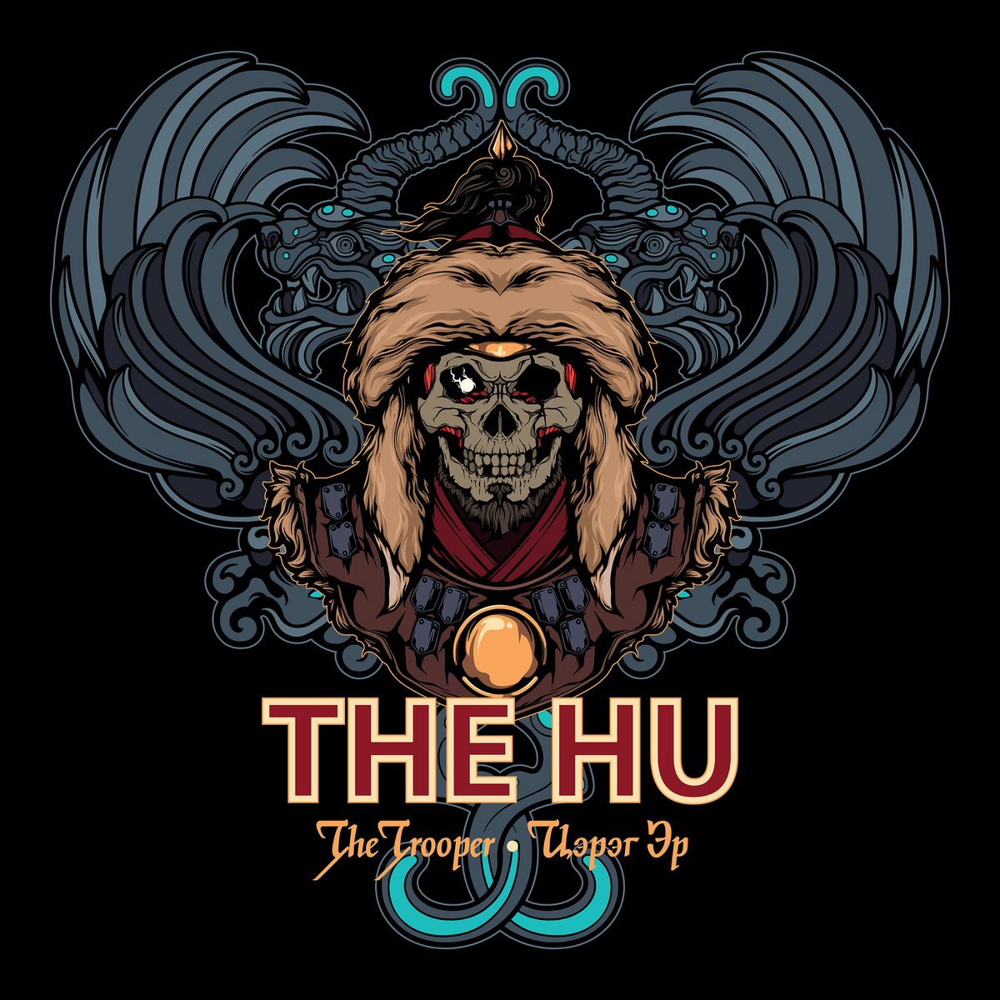

Азійський фолк
Азійський фолк-метал з'єднує елементи традиційної азійської музики з металевою енергією. Часто використовуються етнічні інструменти, народні мелодії та теми історії, природи та духовності. Найвідоміші гурти: Tengger Cavalry, Nine Treasures, Bloody Tyrant, Chthonic, Rudra, Ego Fall.


🎬 Перегляд відео
🆕 Новинки

The Hu – The Trooper (2024)

Chthonic – Battlefields Beyond Time (2024)